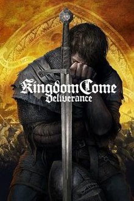

Explora nuestra selección de los mejores juegos independientes que debes jugar este año.
Prince of Persia
Adéntrate en un atractivo juego de plataformas repleto de acción y aventura. Viaja por la mitología persa y manipula
los límites del espacio y el tiempo. Usa tus poderes del tiempo, habilidades de combate y movimientos para ejecutar
combos letales y derrotar a criaturas mitológicas y enemigos corrompidos por el tiempo. Compra amuletos a los comerciantes
y equípate con ellos para jugar a tu manera.
Horizon Forbidden West
Explora páramos remotos, enfréntate a máquinas más grandes e imponentes y descubre increíbles tribus en tu regreso a un futuro lejano
en el mundo apocalíptico de Horizon. La tierra se muere. Las rugientes tormentas y una desolación imparable causan estragos entre
lo que queda de la humanidad, unas cuantas tribus dispersas, mientras nuevas y temibles máquinas merodean por sus fronteras.
Ball FighterZ
Es un videojuego de acción y lucha de los creadores de sagas como Guilty Gear o BlazBlue, con combates de 3 contra 3 y mecánicas basadas
en las 2.5D. Permite a los jugadores entrenar y manejar el estilo de más de un jugador, con lo que se consigue una jugabilidad más profunda.
Disfruta de combos en el aire, escenarios que se pueden destruir y escenas famosas del anime de Dragon Ball.
Taken 8
Lleva al límite el hardware y las tecnologías de última generación. El juego incluye modelos de personajes en alta definición creados desde cero,
con pelo y piel de alta fidelidad, además de gráficos inmersivos, como puede observarse en el reflejo de los movimientos de los personajes
en el propio movimiento de los músculos.
Kingdom Come

Venga la muerte de tus padres mientras luchas contra fuerzas invasoras, haz misiones dinámicas y haz elecciones influyentes.